First Experience is an experiential game designed for children's safety education. In this mobile game, children can choose from different game modes and get past different game hurdles including getting lost, being followed, encountering a big fire and so on. Such practice may become a more effective and more interesting way for children to learn how to protect themselves in an emergency from this game.
I am the user research and prototype designer of our team. I tested our prototype with some kids and their parents. They are quite interested in our product.
This is not a safe world for kids. Teaching kids about how to deal with emergency situations including getting lost, being followed, encountering fire or earthquake and so on is quite important and necessary. Nowadays, it is good to observe that people attach more anc more importance to children's safety education. However, only videos, pictures and text are not enough. Practice may be one of the most effective ways for kids to remember what they should do in an emergency. But a lifelike practice is hard to gain for most kids. So we came up with the idea to create an app which uses experiential game to simulate most emergency situations. With this mobile-based experiential game, kids can practice protecting themselves in the game play.
-
After you log in, you can see different kinds of online courses on the main page. They are about safety education for kids.
 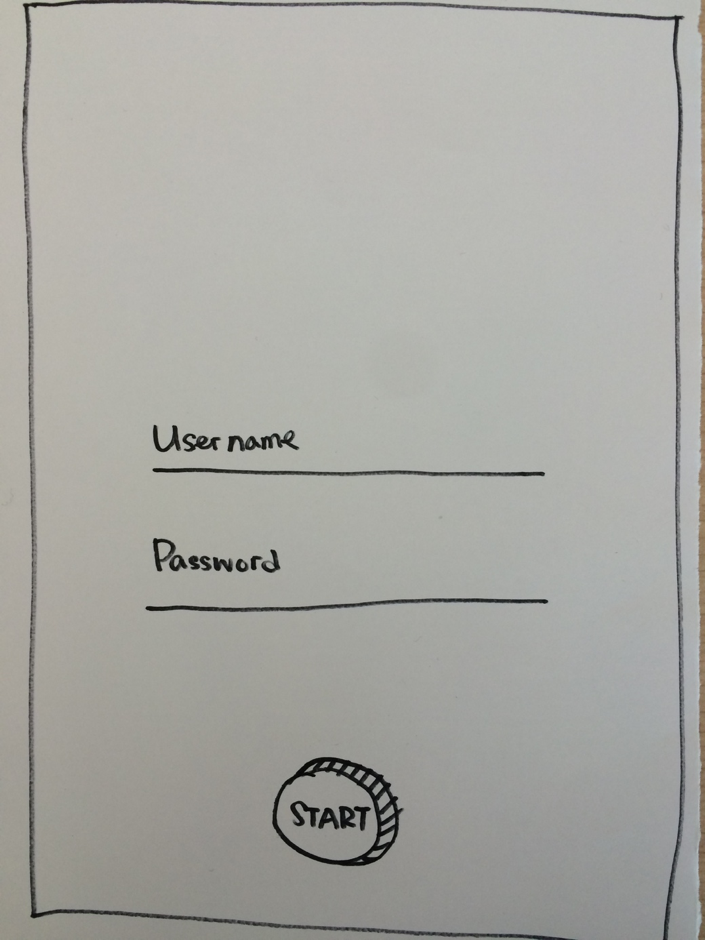
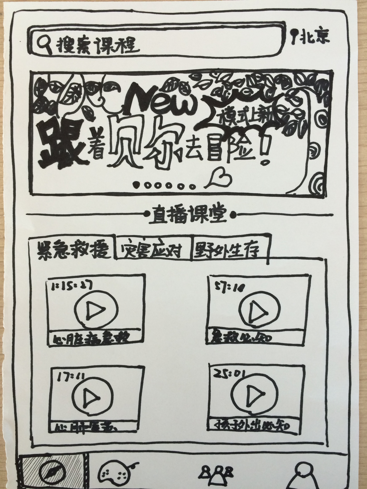
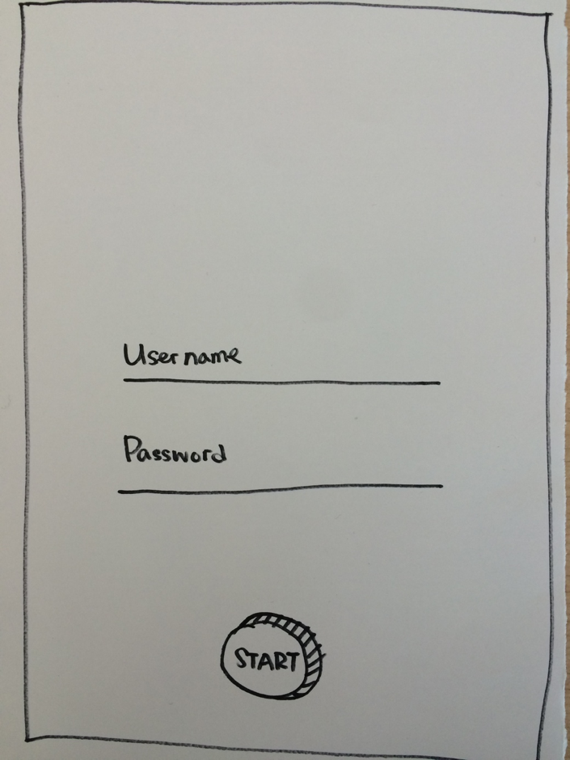
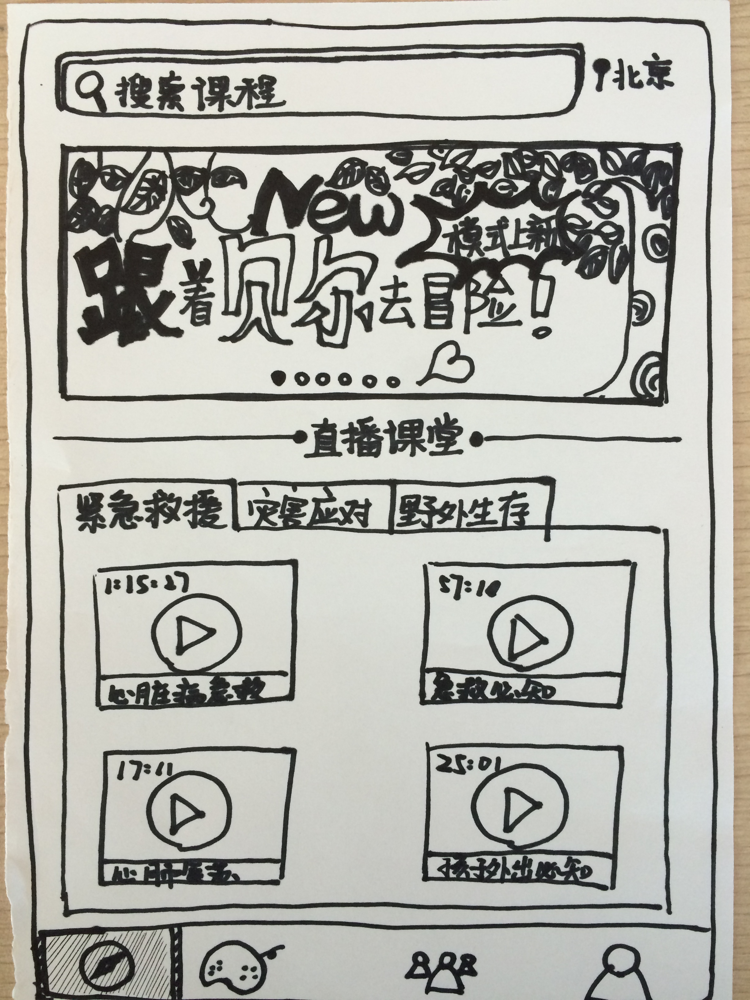
-
At first, children can learn some basic knowledge on how to deal with different emergency situations from those online courses. Then, choose from different game modes, including getting lost, being followed, encountering natural calamities, emergency rescue and so on. Take the game mode of getting lost as an example, at the beginning, you need to choose a specific scene such as in a shopping center, on the street, at a train station and so on.
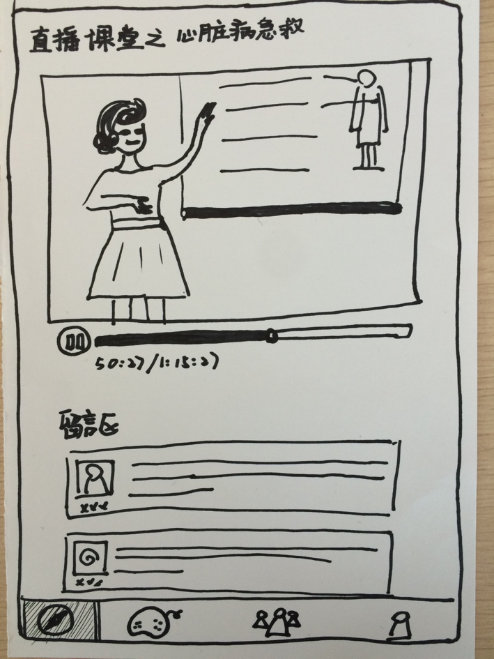 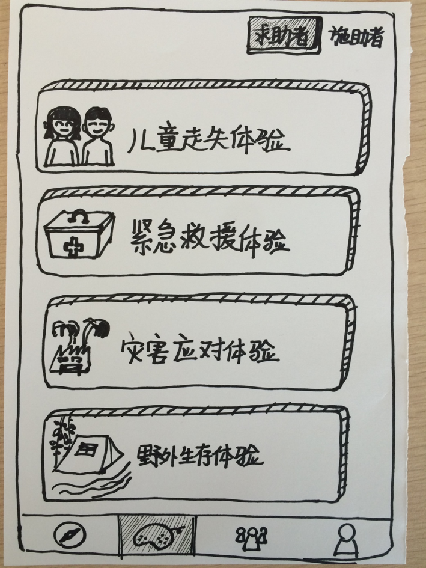 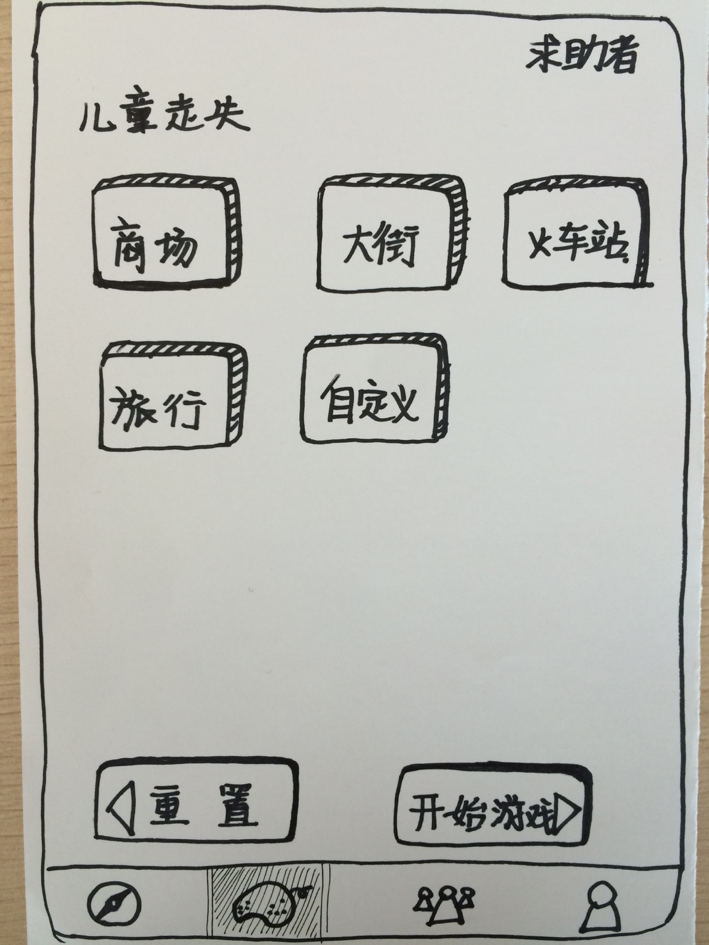 -
Take the game mode of getting lost in a shopping center as an example. There will be several correspoding game plots in it and children need to make their own decision at each plot in order to conquer this game mode. The player can choose where to go, whom to talk to, wheter to respond to a stranger or not, whether to ask for help from a staff or not.
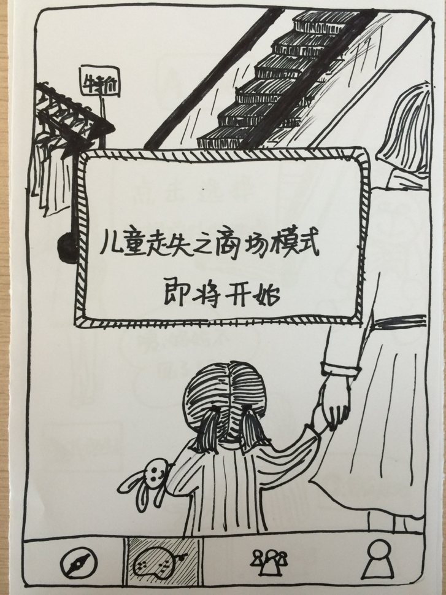 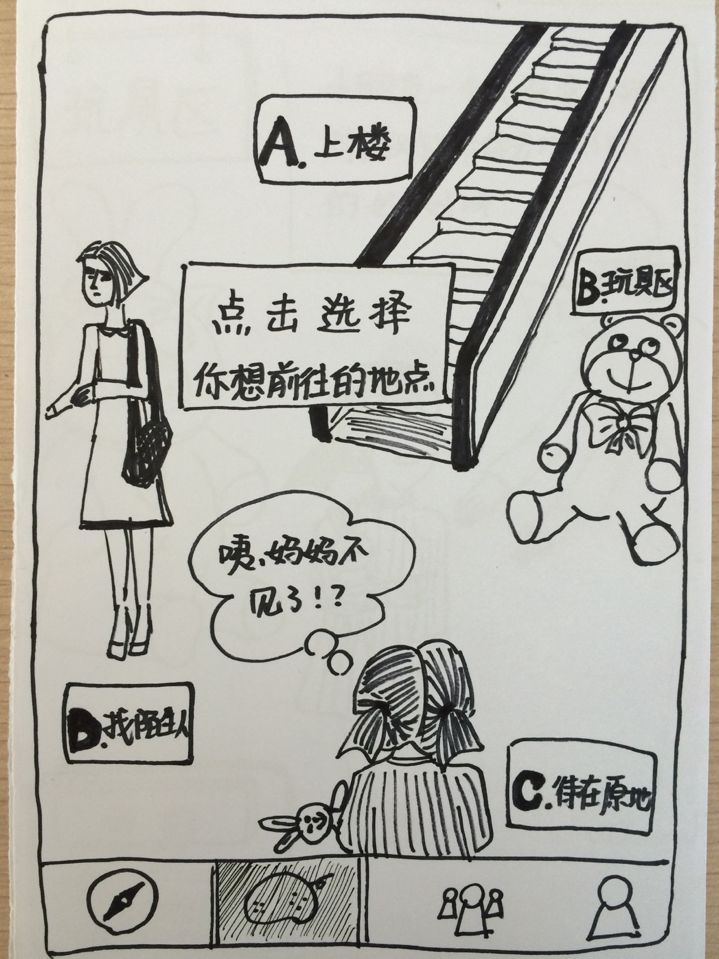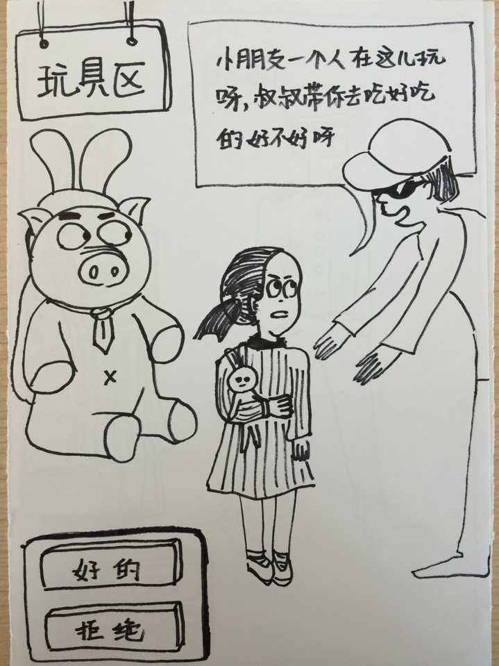 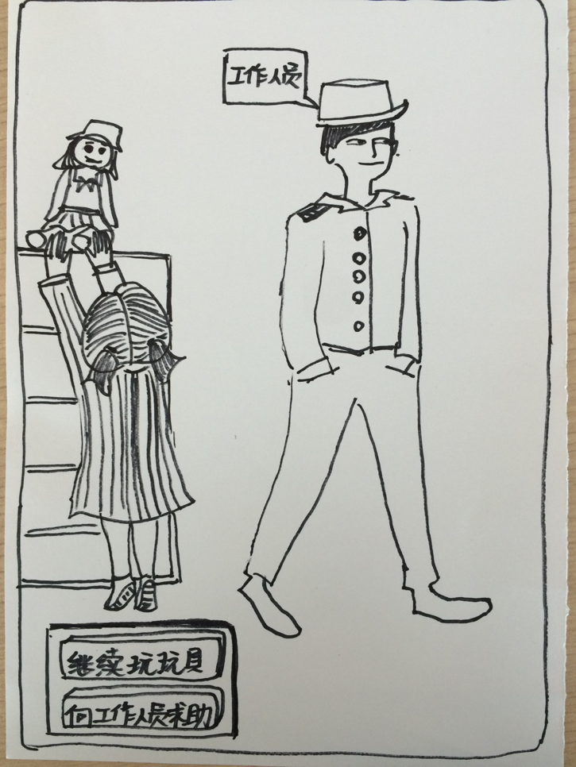 -
According to players' reaction at each plot, there will be different game results waiting for them. If they ask for help from a correct person, stay at a safe place and do not easily respond to a stranger, they will win this game mode and get some rewards. In addition, there is notification service for children to review what they have learned from the game.
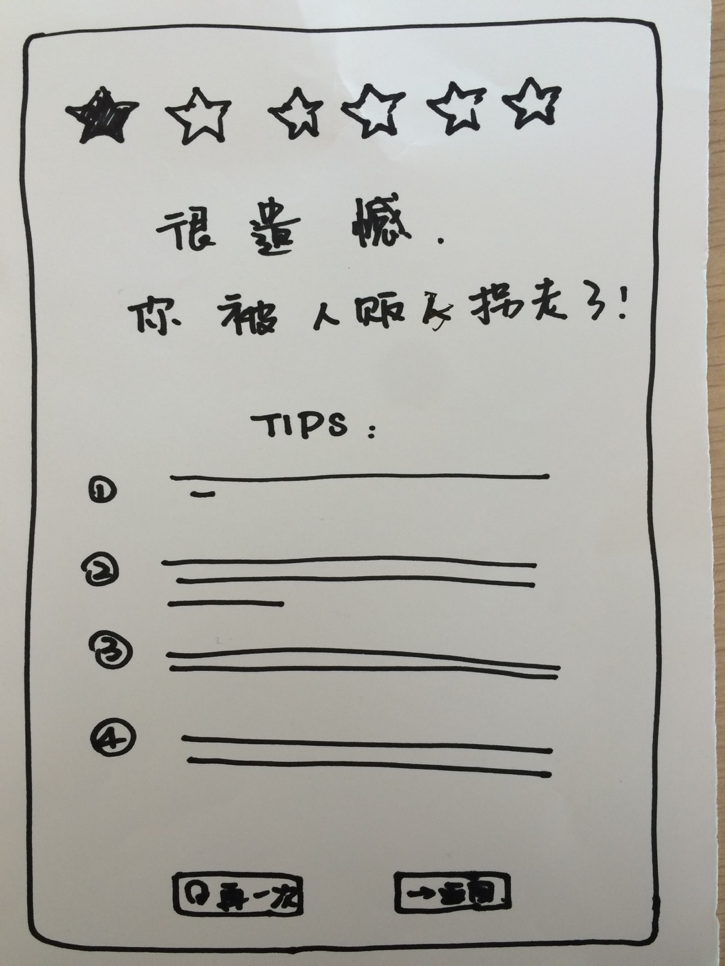 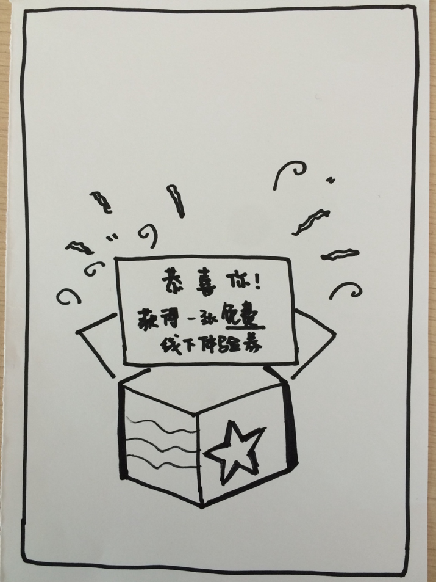 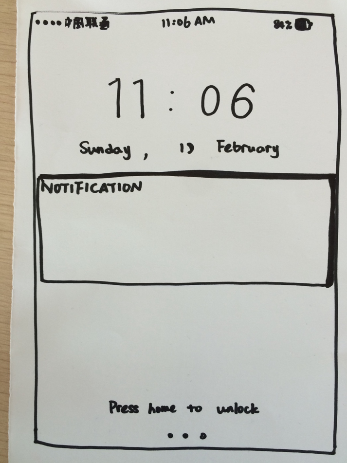